Rust + GPUI · Agent-native Code Editor
necoder は、AI エージェントと並走する時代のコードエディタ。
プロジェクトも、ブランチも、AI スレッドも — ぜんぶ色でわかる。
AGPL-3.0 · まず macOS（Apple Silicon）· 日本語 / English UI
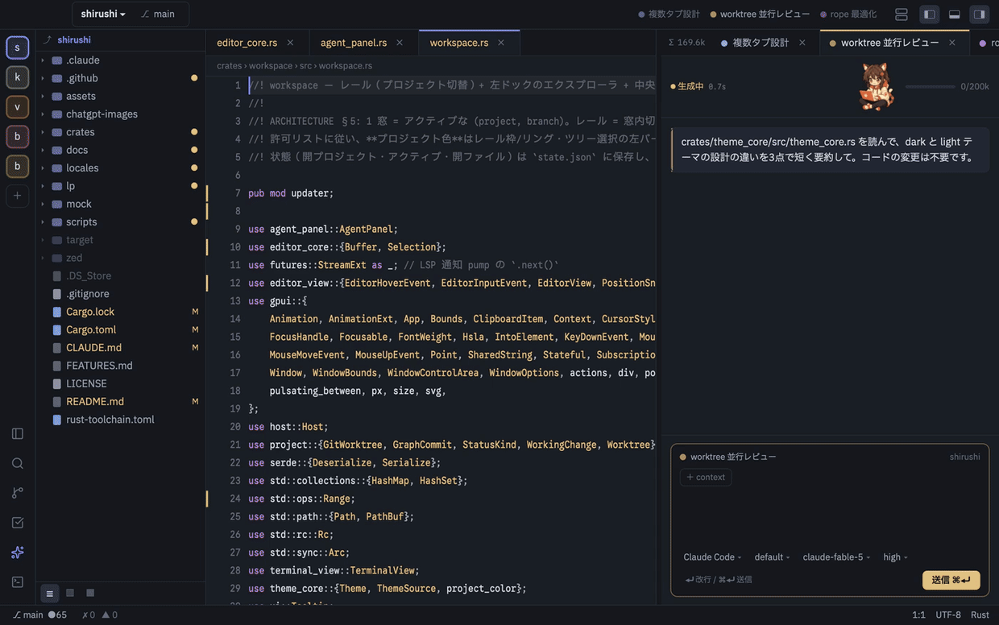
実機キャプチャ 思考中だけ 16 倍速、ほかは実時間
2026-07-17 実測 · M1 Mac · release ビルド
ORIENT BY COLOR
プロジェクトごとに、色がひとつ。レールも、タブも、キャレットも、AI の返事も、その色をまとう。 いくつ並行しても、いまどこにいるかは目の端でわかる。飾りのための色は、ひとつもない。
色を選ぶと、レールのアイコンもタブの上線もキャレットも選択バーも、一斉にその色になる。
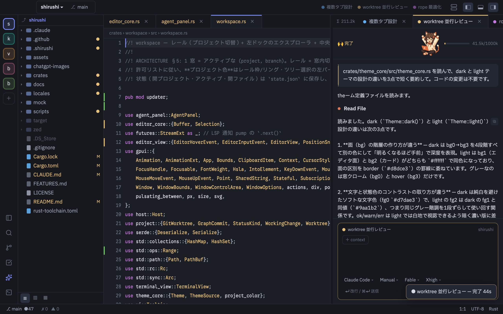
AGENT-NATIVE (ACP)
自前の AI は載せない。Claude Code が ACP（Agent Client Protocol）でそのまま動くから、 いまのサブスクリプションだけでいい。追加の API キーは不要。 スレッドごとに色が付き、どのスレッドがどこで働いているか、迷わない。
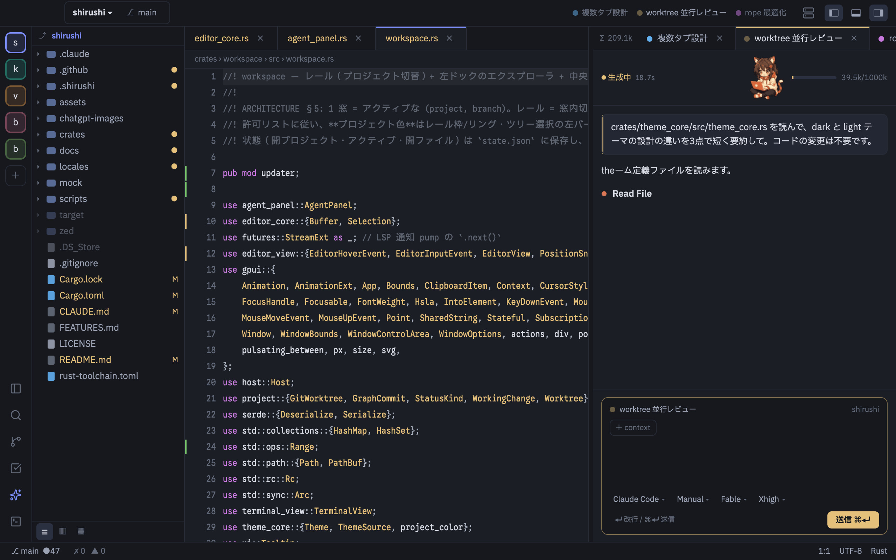
41.5k/1000k。status bar には全スレッド合計 Σ も
真実はプロジェクト直下の .shirushi/todos.md という 1 枚の Markdown。
UI のチェックも、AI の完了報告も、同じファイルの [ ] → [x] 書き換えに落ちる。
人が書いても、エージェントが書いても、板は追従する。
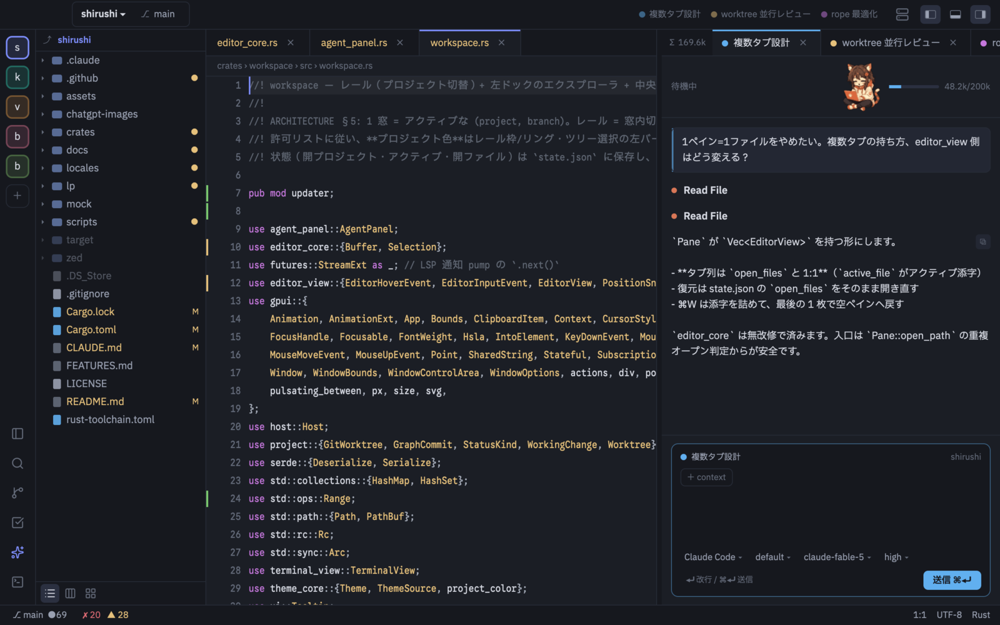
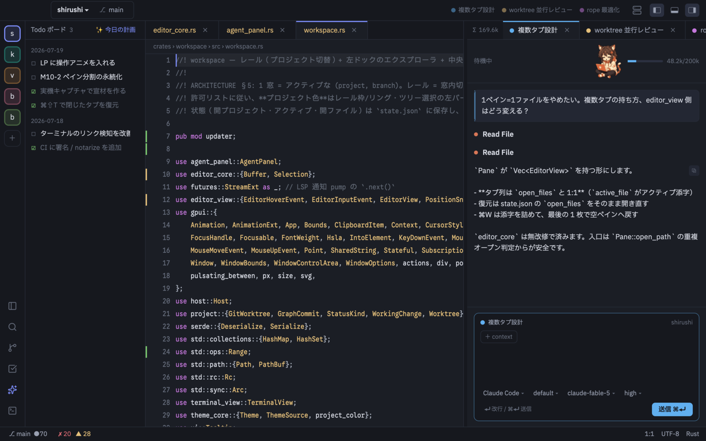
Todo ボードを開くMULTI-AGENT FLEET
2 体、4 体、8 体 — エージェントが増えても迷わない。タイトルバーの Multi Agent で全画面が編隊モードになる。 色で「誰か」、形で「何をしているか」、系譜グラフで全体の流れが、目の端でわかる。
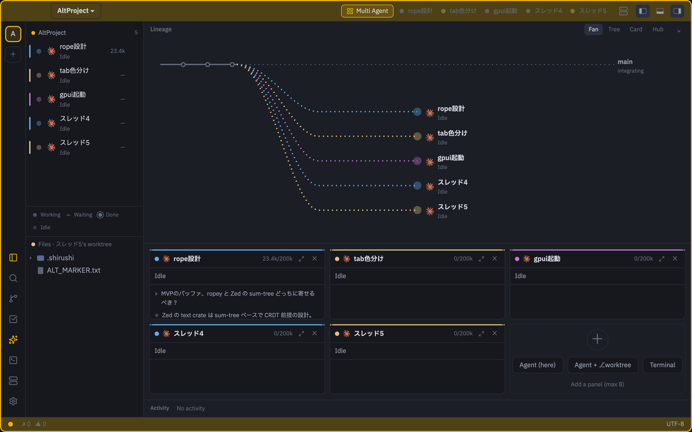
実機キャプチャ 左=エージェント一覧（色=識別）· 中央=系譜グラフ + N 分割グリッド
最重要ビジュアル。すべてネイティブ描画（webview なし）。base から分岐し、完了は main へ統合。 レーンとノードは識別色、先端は状態の形。切り替えて、畳める。
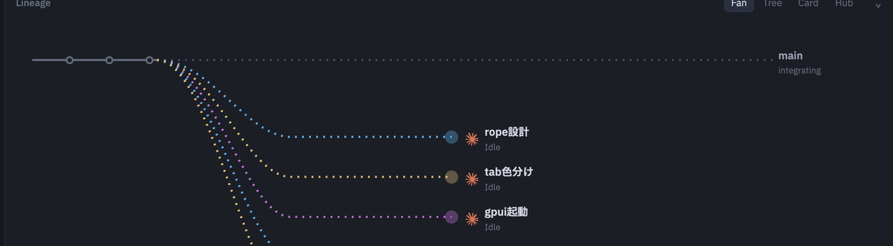
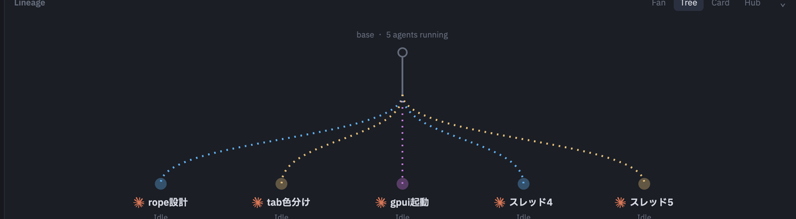
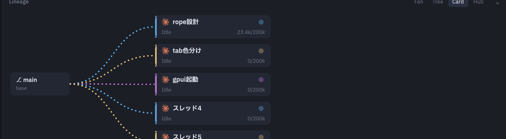
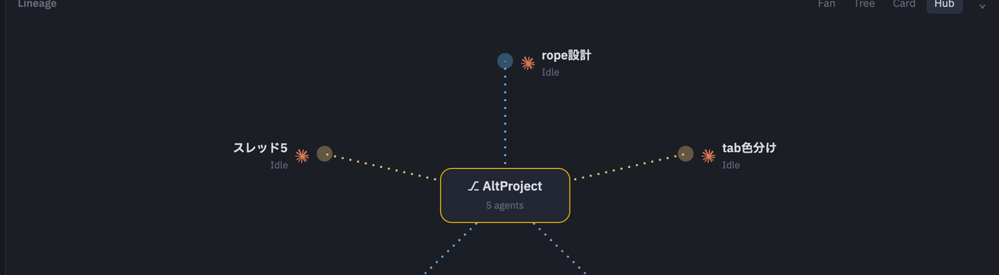
扇形 — base から放射状に分岐。並走の"広がり"が一目でわかる既定表示。
縦ツリー — 上から下への枝分かれ。分岐の"深さ"を辿るのに向く。
カード — 曲線の先が読めるカードに。名前・状態・トークンまで一望。
ハブ — 中央=リポジトリ、スポークが各エージェントへ。歯車のように全体を俯瞰。
状態に色相は使わない。● 作業 / ◐ 承認待ち / ✓ 完了 / ○ 待機 を形と動きで示す。 色は最後まで「誰か」の識別色のまま、状態と衝突しない。承認待ちは半円で、速く脈打つ。
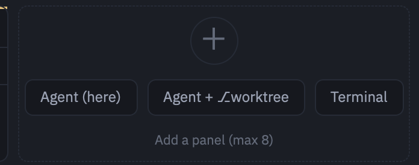
＋ から Agent＋⎇worktree を選べば、その場に隔離ブランチ
agent/N を切り、独立した作業空間（space）ごとエージェントを起動。
worktree の生成はアプリが所有する。左レールに並び、切り替えれば端末・エディタごと追従する。
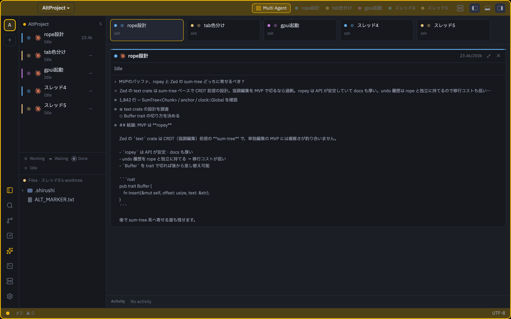
エージェントセルは本物のトランスクリプト、ターミナルセルは本物の端末。編隊は別ビューではなく、同じ編集コアの上に立つ。
CROSS-PROJECT × WORKTREE
ブランチごとに、窓がひとつ。⌘O を押せば、全プロジェクトと worktree、 そこで走っているスレッドまで一覧に出る。⌘1..9 で瞬間切替。 エージェントはブランチごとに並行で走らせる。
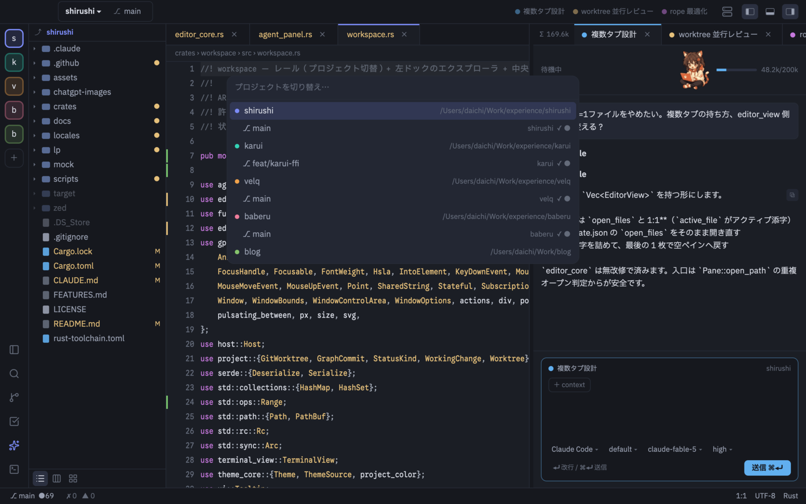
⌘O プロジェクト / worktree 切替A REAL EDITOR
AI が主役でも、手で書く時間は消えない。ropey ベースの編集コア、rust-analyzer の言語知能、 Git、ターミナル、Remote SSH — 毎日使う道具として作っている。
全操作に、キーバインド表示つきで届く。ファイルは ⌘P — 50,000 件でも 10ms で絞り込む。
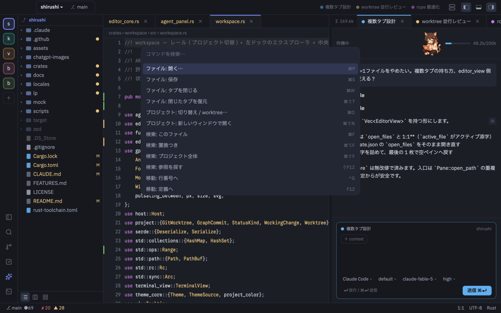
⌘⇧P コマンドパレット打つたびに絞れて、全マッチが灯る。置換は 1 回の undo で戻せる。プロジェクト全体の検索も ⌘⇧F で。
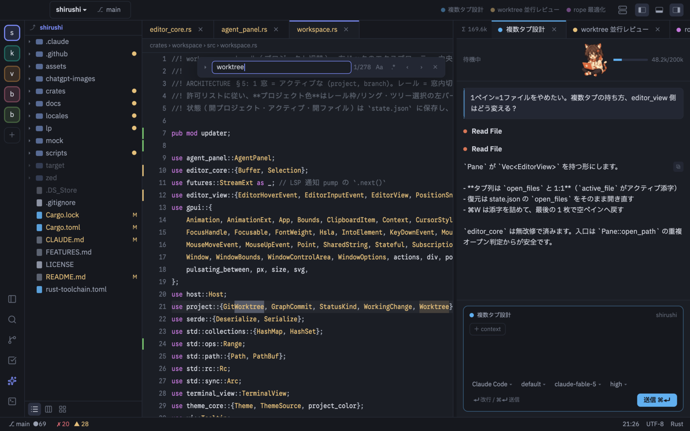
⌘F バッファ内検索変更したファイルの diff は、HEAD と並べてタブで開ける。追加と削除がひと目でわかる。ツリーやガターにも、どこが変わったかの印が灯る。
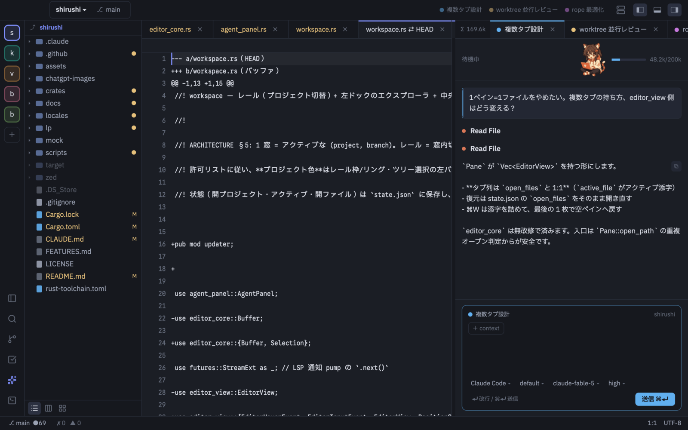
Git → diff タブTHEMES
テーマは JSON 1 枚。18 色を書き換えれば自分の配色になるし、2 色だけ変えても成立する。 テーマを替えても、プロジェクト色の方向感覚はそのまま。切替は ⌘K ⌘T。
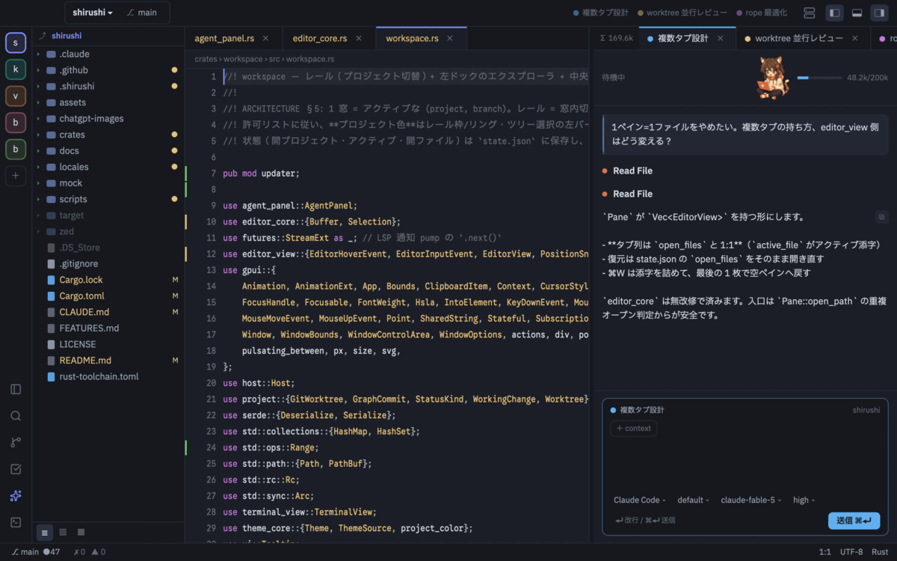
MASCOT
Agent パネルの右上に、小さな猫耳コーダー「nyaco（ニャコ）」が住んでいる。 スレッドがいま何をしているかは、彼女の仕草でわかる。
PERFORMANCE BUDGET
起動 215ms、待機時メモリ 122MB。この速さを保つために、速度へ予算を切ってある。 遅くなったら、それは機能ではなくバグとして直す。
2026-07-17 実測 · M1 Mac · release ビルド。数値は開発中のスナップショットで、日々更新される。
OPEN SOURCE · AGPL-3.0
ライセンスは AGPL-3.0。土台は GPUI（Apache-2.0）と permissive な crate、 あとは自分で書いたコードだけ。Zed の GPL コードは 1 行も入っていない。